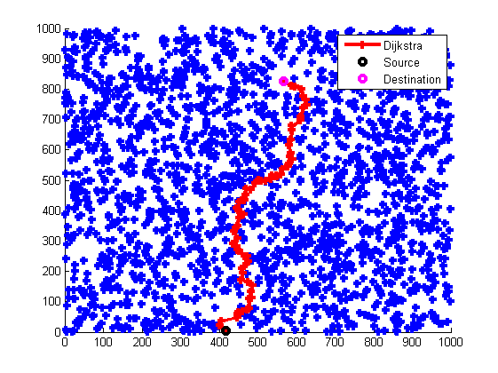
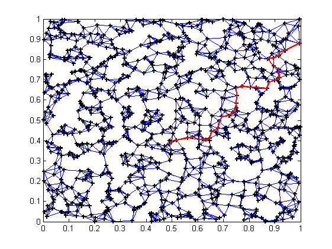
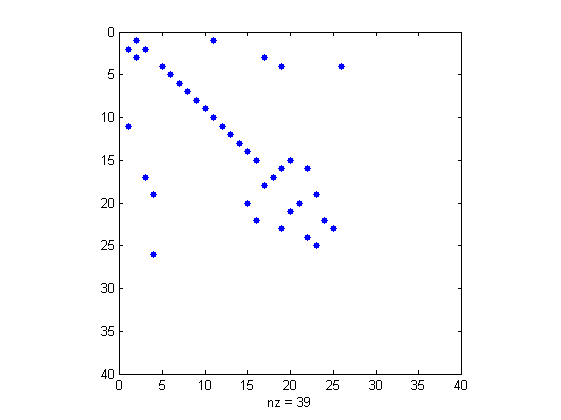

Contents
Example 1 : Adjacency matrix build R-radius neightbours
clear, close all hidden
close all
N = 2000;
L = 1000;
R = 2*L/sqrt(N);
s = 1;
d = 10;
X = L*rand(2 , N);
A = Radjacency(X , R);
[path , pathcost] = dijkstra(A , s , d);
figure(1)
hold on,h=plot(X(1 , :) , X(2 , :) , '+' , X(1 , path) , X(2 , path) , 'r-+', X(1 , s) , X(2 , s) , 'ko' , X(1 , d) , X(2 , d) , 'mo' , 'linewidth' , 3);,hold off
legend(h(2:4) , 'Dijkstra' , 'Source' , 'Destination')

Example 2 : Adjacency matrix build K-neightbourg
s = 1;
d = 3;
N = 1000;
K = 5;
X = rand(2 , N);
A = Kadjacency(X , K);
[path , pathcost] = dijkstra(A , s , d);
figure(2)
gplot(A , X');hold on,plot(X(1 , :) , X(2 , :) , 'k+',X(1 , path) , X(2 , path) , 'r' , 'markersize' , 5 , 'linewidth' , 2), hold off

Example 3 : User problem
s = 2;
d = 12;
I=[2,11,1,3,2,17,19,26,4,5,6,...
7,8,9,1,10,11,12,13,14,20,15,...
22,3,18,17,4,16,23,15,21,20,...
16,24,19,25,22,23,4];
J=[1,1,2,2,3,3,4,4,5,6,7,8,9,...
10,11,11,12,13,14,15,15,...
16,16,17,17,18,19,19,19,20,...
20,21,22,22,23,23,24,25,26];
V=[1.6000,6.0000,2.6667,1.6000,...
2.6667,1.2000,7.2240,4.2000,...
3.6000,3.2000,3.2000,2.6000,...
2.8000,2.6000,3.6000,7.2240,...
2.4000,3.2000,2.6000,3.0000,...
2.9120,2.0000,2.7120,2.0000,...
1.2000,2.0000,7.2240,4.8000,...
2.7120,4.8533,0.4000,0.6667,...
4.5200,0.4000,4.5200,0.4000,...
0.6667,0.6667,7.0000];
pcost = sparse(I,J,V,length(I),length(I));
[path cost] = dijkstra(pcost,s,d)
figure(3)
spy(pcost)
path =
12
13
14
15
16
19
4
5
6
7
8
9
10
11
1
2
cost =
56.7147
